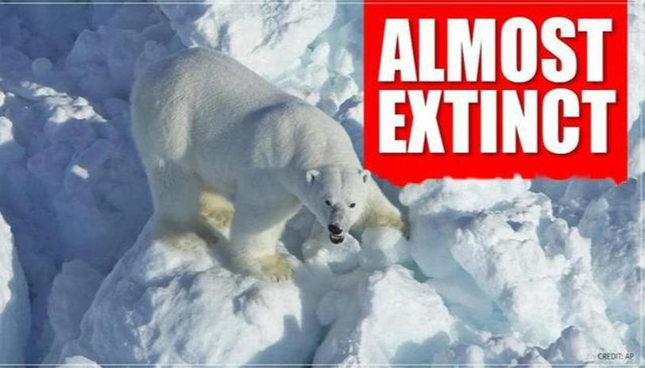
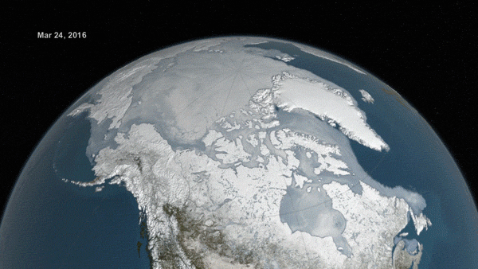
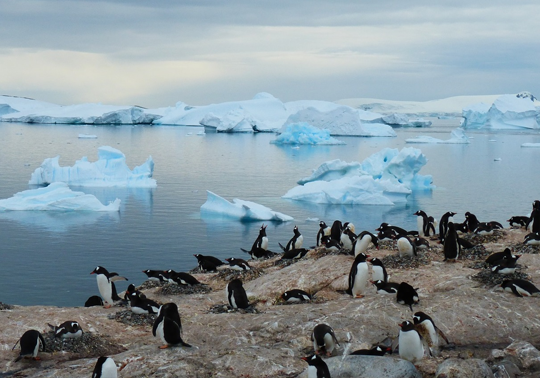

Arctic Ocean: Human Impact
| Animals and Plants | Culture | Food Sources |

Early Harvesting From The Sea:
The early Arctic explorers were drawn to the great abundance of seals and whales in the Arctic,
and began to hunt the valuable animals. Their hunting became so intense that some species were driven nearly to
extinction, and sealing and whaling slowed down only when there were too few left to make the hunts profitable.
Agreements among nations now protect most seals and whales limiting how many can be killed.

Today:
The Arctic Ocean is more vulnerable to human-induced changes than the Antarctic Ocean. The Arctic is more acidic,
warmer during the summer months, and have fewer nutrients; making it more vulnerable. There has been an alarming lack
of sea ice in the Artic which has been in decline due to the steady rise in Earth’s average air and ocean temperatures.
Melting sea ice has consequences. If the sea ice disappears, heat from the sun—which mostly reflects off white ice
surfaces and back into space—instead would be absorbed by the ocean. This would further accelerate the warming of the
Arctic resulting in more warming. Melting glaciers on land would raise sea level. Melting sea ice also means more fresh
water in the ocean, which could flood into the North Atlantic. That could disrupt a global system of currents, known as
the Ocean Conveyor. The Conveyor brings warm, salty Gulf Stream waters northward, where they release heat to the
atmosphere in winter and temper the North Atlantic region’s climate. The waters then become cold enough again to sink to
the abyss, propelling the underside of the Conveyor. If more cold, fresh water is added to the North Atlantic it could
put a lid of lighter water over the warm water and block it from releasing its heat to the atmosphere and sinking to
drive the Conveyor. This could significantly cool the climates of Europe and North America.
How The Animals Are Impacted:
Ice-dependent species like polar bears and reindeer will experience a population decline as their food options disappear.
Thawing permafrost has led to more wildfires and affected infrastructure, while rising ocean temperatures and
acidification have already altered marine fisheries.
There have also been restrictions by the US on the import of sea mammal products; imposition by the International
Whaling Commission of quotas on the take of bowheads by Alaskan native hunters; signing of an international convention
on the conservation of the polar bear (particularly on the high seas) by the US, Norway, Denmark, the former USSR and
Canada; and the devolution of game management authority to Canadian Inuit organizations after land claim settlements.

What We Can Do:
• There is a lot that can be done around the world to slow the loss of Arctic sea ice. We can reduce our carbon
emissions and dependence on fossil fuels.
• We can also take a more active role in preserving the Arctic from thousands of miles away by conserving other
natural resources that have global impacts.